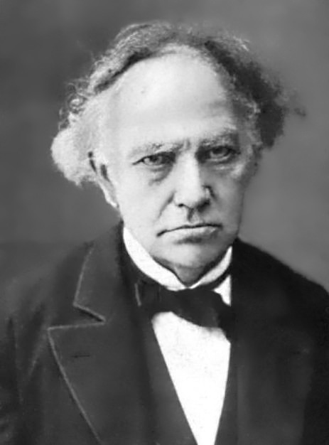
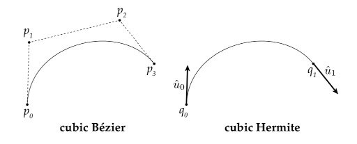

Charles Hermite
Charles Hermite was a great French mathematician who researched the field of number theory,
quadratic forms, invariant theory, orthogonal polynomials, algebra, and elliptic functions. Some
of his works are named after him to honor him like Hermite polynomials, Hermite interpolation,
Hermite Normal form, Hermitian operators, and cubic Hermite splines. He was born in Dieuze,
Moselle, on 24 December 1822, with a deformity in his right foot that would impair his gait
throughout his life.He read some of Joseph-Louis Lagrange’s writings on the solution of
numerical equations and Carl Friedrich Gauss’s publications on number theory.
Hermite Wanted to study at Ecole Polytechnique a very renowned for excellence in mathematics,
science, and engineering. In 1845 he was admitted to the school but after a year he was not allowed
to study because of his deformed foot and he quit the Ecole Polytechnique without graduating.
Hermite spent his five years working privately toward his degree and he met friends, eminent
mathematician Joseph Bertrand, Carl Gustav Jacob, Jacobi, and Joseph Liouville, he took and
passed the examinations for the Baccalaureat, which he was awarded in 1847.
In July 1848, he was elected to the French Academy of sciences. In1869, he succeeded
Jean-Marie Duhamel as professor of mathematics, both at the Ecole Polytechnique. Upon his
70th birthday, he was promoted to grand officer in the french legion of Honour. He died in Paris
on 14 January 1901, aged 78.

I have already had some experience with the beziers curve, as I am
interested to solve computational problems using mathematics, the
work done by Hermite is very helpful, for example, his research regarding number theory, orthogonal polynomials, invariant theory, and
others. I will sure be implementing his work in my projects and competition. Also, I realized that
Charles Hermite and Nikola tesla died on the same day coincident?
by Prabesh Shrestha